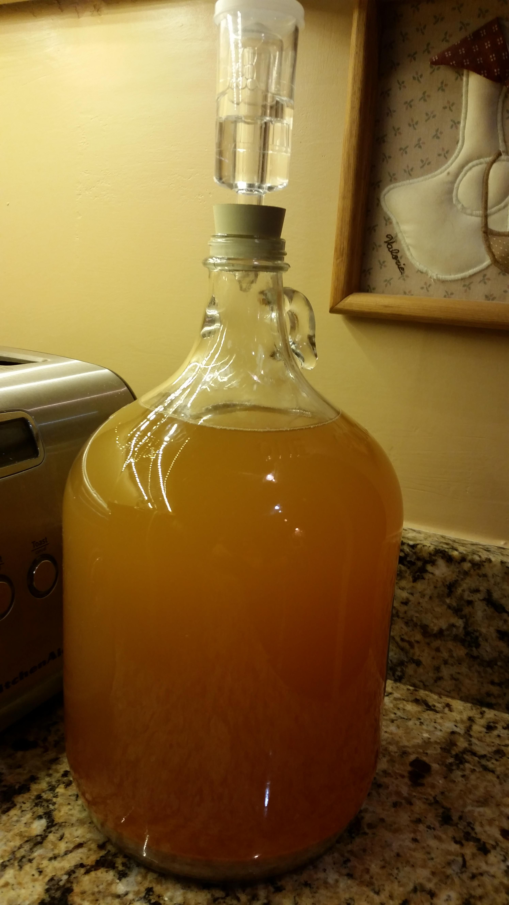
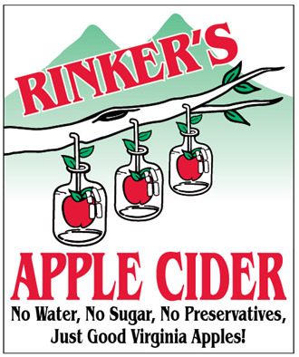

 Hard apple cider is the kindest of the do-it-yourself homemade alcoholic beverages. Beer must be cumbersomely boiled, wine is expensive and temperamental, and poorly distilled spirits can blow up your house. They all take so much equipment, so much research, and give all the beer, wine, and spirits on the market, why bother. On the other hand, hard cider is a relative cakewalk to make at home.
For me, its is a worth while endeavor to pick up the art of fermenting cider. I have purchased a few good hard apple cider where I live, only to find out later that where I purchase it no longer carries it. Also, I have developed a longing for a specific style of hard cider. I crave a hard cider that isn't clear (I think the yeast apple particulates can add something to the taste), high alcohol level (ABV of 8% or more), slightly sweet, and a crisp apple taste. Frankly, I have yet to purchase my ideal hard apple cider.
There may be some regulatory reasons for my disappointment in the hard cider I purchase. The web site, The Hard Cider Project, posted a article titled "Why Federal Regulations Have Completely Restricted Hard Cider Making". The basic thesis is that Title 27: Alcohol, Tobacco and Firearms, Part 24 Wine, §24.10 Meaning of terms of the Federal Regulations defines hard cider into a narrow category. It restricts both its alcohol content (< 7% ABV) and things that can be added (can't add anything that imparts a fruit flavor other than apple). The result is not a very exciting hard cider, otherwise your subject to higher taxes because the Feds call it wine or champagne.
 So in October of 2014 and 2015, I took the plunge and brewed several batches of hard cider and applejack (aka Jersey Lightning) using locally pressed, heat pasteurized sweet apple cider. After several rounds of experimentation, I settled on a process and receipt that is getting close to my ideal hard cider. A hard cider with a high ABV, as I crave, can be tricky. Higher ABV may make it more harsh and less apple-tasting. Also, a fully fermented cider is very, very dry. It will still having some apply flavor, it is a long way for the refreshing taste of sweet apply cider.
My solution to this, in an effort to create my ideal hard apple cider, was to do two things. First, to get the high ABV, I took a portion of the hard cider, made it into applejack, and then mixed it back into the hard cider. Second, to get the sweet apple taste I wanted, I back-sweeten the hard cider with a combination of brown sugar and sweet apple cider. I used the traditional method of making applejack freeze distillation, as opposed to steam distillation. I also age it for at least 3 months before carbonating and then drinking it. I got to say, its dam good!
After much research on the Internet, I concluded my mixing of hard cider with applejack is a unique receipt, so it deserves a name. Using the fact that the word "applejack" is derives from "jacking" (an American colonial term for freeze distillation), I choose to call it "Jeff's Jacked Hard Cider", or "Jeff's Jacked", or sometimes more lovingly called "My Hooch".
You can find my receipt here.
My next brewing adventure will be some variation of Apple Pie Moonshine!